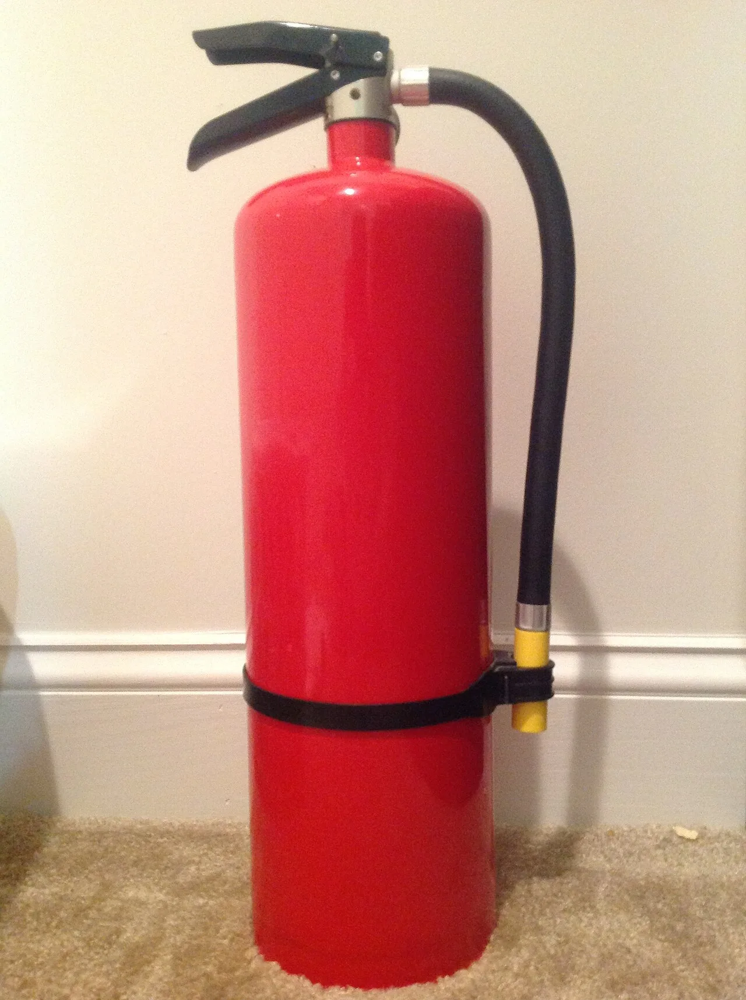
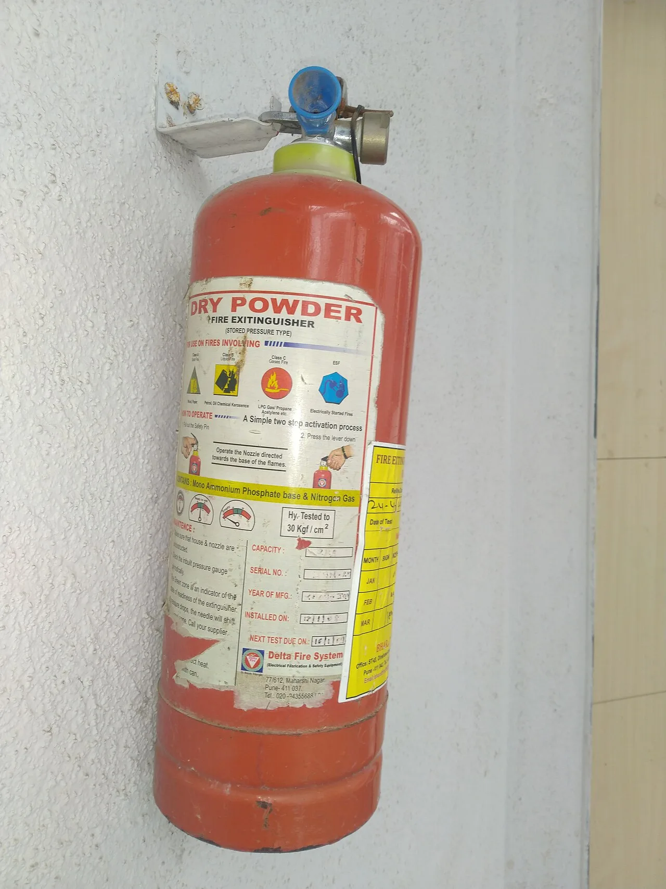
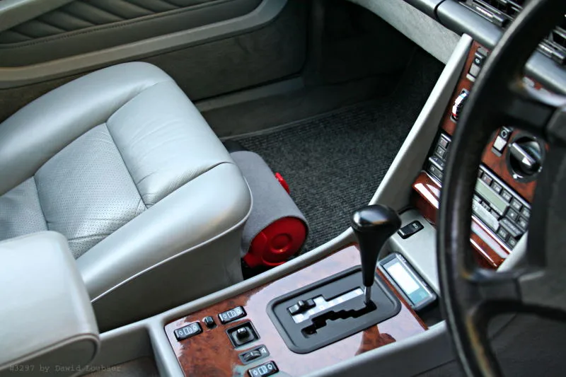
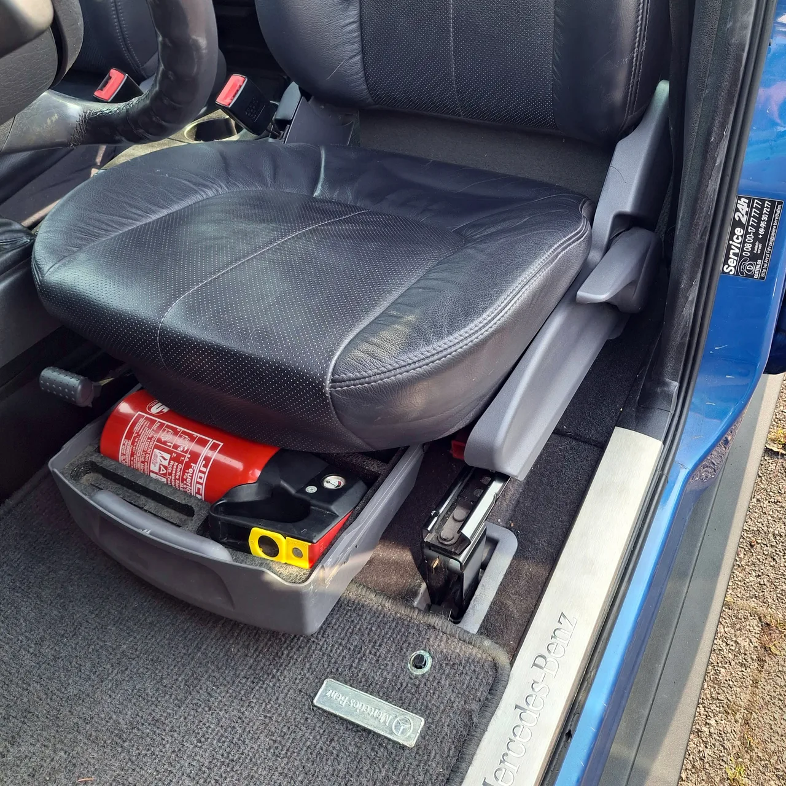
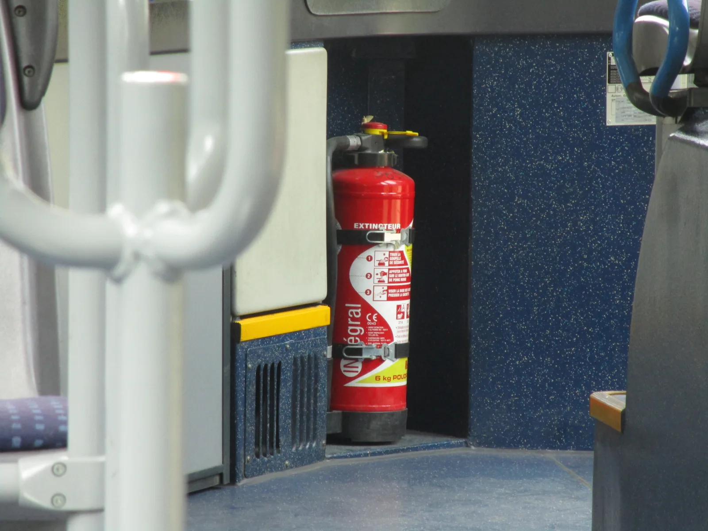

▲ 2024년 12월 1일부터 5인승 이상 승용차도 '자동차 겸용' 소화기를 갖춰야 한다 ⓒ Wikimedia Commons
내비게이션에 '소화기 의무화'라고 검색하면 가장 먼저 나오는 말이 있다. "에어로졸식은 인정 안 됩니다."
2024년 12월 1일부터 5인승 이상 승용자동차에도 차량용 소화기 비치가 의무화됐다. 그런데 집에 있던 소화기, 인터넷에서 산 스프레이형 소화용구를 아무거나 넣어둔다고 해결되는 게 아니다. '자동차 겸용' 표시가 없으면 애초에 법이 인정하는 차량용 소화기가 아니기 때문이다.
시행 1년이 지난 2026년 현재, 정확한 대상 차종과 시행 시기, 규격, 설치 위치, 그리고 정작 논란이 된 처벌 규정 문제까지 국가법령정보센터와 소방청 자료를 바탕으로 다시 정리했다.
1. 정확한 시행 시기와 대상 — 왜 2024년 12월 1일인가
법적 근거는 '소방시설 설치 및 관리에 관한 법률' 제11조와 시행규칙 [별표2] '차량용소화기의 설치 또는 비치기준'이다. 소방청은 2021년 11월 이 법을 개정하면서 3년의 유예기간을 뒀고, 그 기간이 끝난 2024년 12월 1일부터 5인승 이상 승용자동차까지 대상이 넓어졌다.
원래 소방시설법상 차량용 소화기 비치는 7인승 이상 승용차, 승합차, 화물차, 특수차에만 적용됐다. 이번 개정으로 국내 등록 차량의 대다수를 차지하는 일반 5~6인승 세단·SUV까지 대상이 확대된 것이다.
📍 소급적용되지 않는다 — 기존 차량은 대상이 아니다
2024년 12월 1일 이후 제작·수입돼 새로 등록된 차량과 그 이후 자동차관리법 제6조에 따라 소유권 변동으로 이전등록된 차량부터 의무가 적용된다. 그 이전부터 타던 차를 계속 보유하고 있다면 법적으로는 소급 대상이 아니다. 다만 화재 시 생명과 직결되는 안전장비인 만큼, 대상이 아니더라도 비치를 권장한다.
2. 적정 소화기 규격 — '자동차 겸용' 표시를 확인해야 하는 이유
아무 소화기나 넣어둔다고 법적 요건을 채우는 게 아니다. 소방청 기준상 차량용 소화기로 인정되려면 성능시험·진동시험·고온시험을 모두 통과해야 하고, 이를 통과한 제품에는 용기 표면에 '자동차 겸용'이라는 표시가 붙는다.

▲ 소화기 라벨에는 소화 등급(A·B·C), 용량, 제조 정보가 표기돼 있다 — 국내 차량용 소화기는 여기에 'KFI 형식승인번호'와 '자동차 겸용' 표시가 추가로 붙는다 ⓒ Wikimedia Commons
| 구분 | 내용 |
|---|---|
| 차량용(자동차 겸용) 소화기 | 성능·진동·고온시험 통과, 용기에 '자동차 겸용' 표시, KFI 형식승인 필요 |
| 일반 분말소화기 | 가정·사무실용으로는 적법하지만 진동시험을 거치지 않아 차량 비치용으로는 불인정 |
| 에어로졸식 소화용구 | 스프레이형 소화 스프레이 등 — 법이 정한 소화기 형식이 아니므로 불인정 |
5인승 승용차의 최소 기준은 능력단위 1 이상(약 0.7kg급) 소화기 1개다. 화재 유형을 가리지 않고 대응하려면 일반화재(A급)·유류화재(B급)·전기화재(C급)를 모두 잡는 ABC 분말형을 고르는 게 일반적으로 권장된다.
✅ 구매 전 라벨에서 확인할 것
· 용기에 '자동차 겸용' 문구가 있는지
· KFI 형식승인번호·제품검사필증이 표기돼 있는지
· 능력단위(예: A3, B5, C 등)와 중량(kg)
· 사용 가능 온도 범위 — 여름철 트렁크·겨울철 한파에 노출되는 차량 환경을 견디는지
· 제조년월·유효기간 — 소화기도 유효기간이 있고, 지나면 성능이 떨어진다
3. 설치 위치 — 트렁크에 넣어두면 사실상 없는 것과 같다
법은 '사용하기 쉬운 곳'에 두라고만 규정할 뿐, 구체적인 위치를 못박지는 않는다. 하지만 실제 화재 대응 관점에서는 위치가 소화기의 실효성을 좌우한다.

▲ 조수석 옆, 센터콘솔 사이처럼 운전 중에도 손이 닿는 위치가 권장된다 ⓒ Wikimedia Commons
✅ 권장 위치 vs 비권장 위치
· 권장: 운전석·조수석 시트 밑, 도어 포켓, 센터콘솔 옆, 글로브박스
· 비권장: 트렁크 — 화재 초기 1~2분 안에 꺼내기 어려워 사실상 무용지물이 될 수 있음
· 비권장: 여름철 직사광선이 오래 드는 대시보드 위 — 고온 노출로 소화기 내구성이 떨어질 수 있음
차량 화재는 초기 대응 여부가 피해 규모를 가른다. 손을 뻗어 바로 잡을 수 없는 위치라면, 소화기를 비치했다는 사실 자체가 의미가 없어진다.

▲ 해외 완성차 업체가 순정 옵션으로 앞좌석 시트 밑 서랍에 소화기를 배치한 사례 — 트렁크가 아니라 좌석 밑처럼 손이 바로 닿는 공간에 두는 것이 핵심이다 ⓒ Wikimedia Commons
4. 기존 상업용 차량 의무와의 차이 — 승합차·화물차는 개수부터 다르다
승합차·화물차·특수차는 이미 오래전부터 소화기 비치가 의무였다. 5인승 승용차와 달리 승차 인원과 적재중량에 따라 개수와 능력단위가 세분화돼 있다는 점이 가장 큰 차이다.
| 차종 | 기준 |
|---|---|
| 5인승 이상 승용차 | 능력단위 1 이상(0.7kg급) 소화기 1개 |
| 소형 승합차(15인 이하) | 능력단위 2 이상 1개 또는 능력단위 1 이상 2개 |
| 중형 승합차(16~35인) | 능력단위 2 이상 2개 |
| 대형 승합차(36인 이상) | 능력단위 3 이상 1개 + 능력단위 2 이상 1개 |
| 중형 이하 화물차(1톤 초과~5톤 미만) | 능력단위 1 이상 1개 |
| 대형 화물차(5톤 이상) | 능력단위 2 이상 1개 또는 능력단위 1 이상 2개 |

▲ 다인승 버스는 탑승 인원에 비례해 소화기 개수·용량 기준이 더 엄격하다(사진은 해외 시내버스 사례) ⓒ Wikimedia Commons
차종별 정확한 설치 기준 원문은 국가법령정보센터에서 확인할 수 있다. 시행규칙 별표2 바로가기
5. 처벌 규정 — 왜 '유명무실'이라는 말이 나오나
여기서 5인승 승용차와 기존 대상 차량의 결정적 차이가 드러난다. 7인승 이상 승용차·승합차·화물차는 위반 시 시정기간 115일(약 4개월) 후 최대 60만원 과태료, 1년 이상 방치 시 운행정지 처분까지 이어지는 절차가 마련돼 있다.
반면 이번에 새로 대상이 된 5인승 이상 승용차는 다르다. 현재 소방시설법에는 5인승 승용차의 소화기 미비치에 대한 과태료·운행제한 규정이 없다. 시행 1년이 지난 2025년 12월 기준으로도 별도의 단속·처벌 수단이 도입되지 않아, 지역 언론은 "처벌·단속 없어 '종이 조항' 전락"이라는 표현까지 써가며 "의무는 있는데 강제력이 없다"는 지적을 꾸준히 내놓고 있다.
📍 그래도 확인은 된다 — 자동차검사 때 체크
과태료는 없지만 자동차관리법 제43조에 따른 정기 자동차검사 때 차량용 소화기 비치 여부를 확인 항목으로 점검한다. 당장 벌금으로 이어지지는 않더라도, 검사 현장에서 지적받거나 안내를 받을 수 있다는 뜻이다. 제도가 처벌 중심이 아니더라도, 본인과 동승자의 안전을 위한 장비라는 점은 달라지지 않는다.
6. 요약
2024년 12월 1일부터 5인승 이상 승용자동차도 차량용 소화기 비치가 의무화됐다. 다만 그 이전에 등록된 차량에는 소급되지 않고, 2024년 12월 1일 이후 신규·이전등록된 차량부터 적용된다.
아무 소화기나 인정되는 게 아니다. 성능·진동·고온시험을 통과해 용기에 '자동차 겸용' 표시와 KFI 형식승인번호가 붙은 제품만 법적 요건을 채운다. 일반 분말소화기와 에어로졸식 소화용구는 불인정된다. 설치 위치는 트렁크가 아니라 운전석·조수석에서 손이 바로 닿는 곳이 권장된다.
승합차·화물차는 이미 인원·중량별로 세분화된 개수 기준을 적용받아 왔고, 위반 시 과태료·운행정지까지 이어진다. 반면 새로 대상이 된 5인승 승용차는 아직 과태료 등 처벌 규정이 없어 사실상 권고에 가깝다는 지적이 있다. 그래도 자동차검사 때 비치 여부가 확인 항목에 포함돼 있고, 무엇보다 화재 초기 대응이 가능한 유일한 장비라는 점에서 처벌 여부와 무관하게 갖춰두는 것이 안전하다.